Chapter 2 Classical Theory of Simple Linear Regression
2.1 Review
In this section, we review material that will be used in the first two chapters. The most important theory for this chapter is that related to normal random variables.
Recall, a normal random variable with mean \(\mu\) and standard deviation \(\sigma\) has pdf given by
\[
f(x) = \frac {1}{\sqrt{2\pi}\sigma} e^{-(x- \mu)^2/(2\sigma^2)}
\]
We will not work much with the pdf directly, but rather use the built in R function dnorm, which has usage dnorm(x, mu, sigma). Let’s look at a couple of plots of pdfs of normal random variables.
curve(dnorm(x, 0, 1/sqrt(2)), from = -3, to = 3, col = 3,
main = "Normal rvs",
ylab = "likelihood") #green
curve(dnorm(x, 0, 2), add= T, col = 2) #red
curve(dnorm(x, 0, 1), add = T, col = 1) #black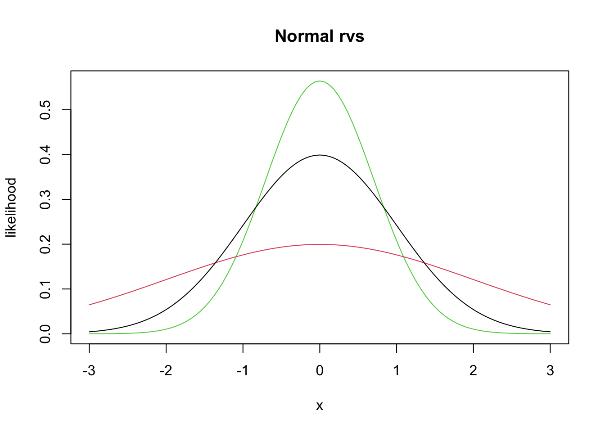
Figure 2.1: Three normal probability density functions with mean 0. The green curve has the smallest standard deviation (sd = 1/sqrt(2), narrowest and tallest), the black curve has sd = 1 (medium width), and the red curve has sd = 2 (widest and flattest). All three are symmetric and bell-shaped around x = 0.
Recall that the area under the curve between \(x = a\) and \(x = b\) of the pdf of \(X\) gives \(P(a \le X \le b) = \int_a^b f(x)\, dx\). Probability density functions can also be used to find the expected value (also called the mean) of a random variable \(X\) via
\[ \mu_X = E[X] = \int_{-\infty}^\infty x f(x)\, dx. \]
Theorem 2.1 Key facts about normal random variables.
If \(X_1\) and \(X_2\) are independent normal random variables with means \(\mu_1, \mu_2\) and standard deviations \(\sigma_1, \sigma_2\), then \(X_1 + X_2\) is normal with mean \(\mu_1 + \mu_2\) and standard deviation \(\sqrt{\sigma_1^2 + \sigma_2^2}\). if
If \(X \sim N(\mu, \sigma)\) and \(a\) is a real number, then \(X + a \sim N(\mu + a, \sigma)\).
If \(X \sim N(\mu, \sigma)\) and \(a\) is a real number, then \(aX \sim N(a\mu, a\sigma)\).
The key things to remember are that the sum of independent normals is again normal, and that translating or scaling a normal is still normal. The means and standard deviations of the resulting random variables can be computed from general facts about sums of rvs, given below.
Theorem 2.2 The following are facts about expected values of rvs.
\(E[X + Y] = E[X] + E[Y]\), whether \(X\) and \(Y\) are independent or dependent!
\(E[a] = a\).
\(E[aX] = aE[X]\).
\(E[\sum_{i = 1}^n a_i X_i] = \sum_{i = 1}^n a_i E[X_i]\).
Recall that the variance of an rv is \(V(X) = E[(X - \mu)^2] = E[X^2] - \mu^2\), and that the standard deviation is the square root of the variance.
Theorem 2.3 Here are some key facts about variances of random variables.
\(V(aX) = a^2 V(X)\)
\(V(\sum_{i = 1}^n a_i X_i) = \sum_{i = 1}^n a_i^2 V(X_i)\), provided that the random variables are independent!
\(V(a) = 0\)
The other key thing that you will need to remember is about simulations. We will be doing quite a bit of simulation work in this chapter.
2.1.1 Estimating Means and standard deviations
Let’s recall how we can estimate the mean of a random variable given a random sample from that rv. Recall that r + root is the way that we can get random samples from known distributions. Here, we estimate the mean of a normal rv with mean 1 and standard deviation 2. Obviously, we hope to get approximately 1.
We first get a single sample from the rv, then we put it inside replicate.
## [1] 1.551524This creates a vector of length 10000 that is a random sample from a normal rv with mean 1 and sd 2. For simple examples like this, it would be more natural to do sim_data <- rnorm(10000, 1, 2), but the above will be easier to keep track of when we get to more complicated things, imho.
Next, we just take the mean (average) of the random sample.
## [1] 1.023636And we see that we get pretty close to 1. Let’s verify that \(2 *X + 3 * Y\) has mean \(2\mu_X + 3 \mu_Y\) in the case that \(X\) and \(Y\) are normal with means 2 and 5 respectively.
x <- rnorm(1, 2, 1) #chose sd = 1
y <- rnorm(1, 5, 3) #chose different sd just to see if that matters
2 * x + 3 * y## [1] 20.46246That is one sample from \(2X + 3Y\). Let’s get a lot of samples.
sim_data <- replicate(10000, {
x <- rnorm(1, 2, 1) #chose sd = 1
y <- rnorm(1, 5, 3) #chose different sd just to see if that matters
2 * x + 3 * y
})
mean(sim_data)## [1] 18.8274## [1] 19We compare the estimated mean to the true mean of 19, and see that we are pretty close. To be sure, we might run the simulation a couple of times and see whether it looks like it is staying close to 19; sometimes larger, sometimes smaller.
To estimate the variance of an rv, we take a large sample and use the R function var, which computes the sample variance. This is not as straightorward from a theoretical standpoint as taking the mean, but we will ignore the difficulties. We know from Theorem ?? that the variance of \(2X + 3Y\) shoule be \(4 * 1 + 9 * 9 = 85\). Let’s check it out. We already have built our random sample, so we just use var on that.
## [1] 87.80047Let’s repeat a few times.
sim_data <- replicate(10000, {
x <- rnorm(1, 2, 1) #chose sd = 1
y <- rnorm(1, 5, 3) #chose different sd just to see if that matters
2 * x + 3 * y
})
var(sim_data)## [1] 88.03891Seems to be working. To estimate the standard deviation, we would take the square root, or use the sd R function.
## [1] 9.382905## [1] 9.382905## [1] 9.219544The reason it is tricky from a theoretical point of view to estimate the standard deviation is that, if you repeated the above a bunch of times, you would notice that sd is slighlty off on average. But, the variance is correct, on average.
2.1.2 Estimating the density of an rv
In this section, we see how to estimate the pdf of an rv and compare it to the pdf of a known distribution. We continue with the normal examples. Let’s verify that \(2X + 3Y\) is normal, when \(X \sim N(0, 1)\) and \(Y \sim N(1, 2)\). (\(Y\) has standard deviation 2).
sim_data <- replicate(10000, {
x <- rnorm(1, 0, 1)
y <- rnorm(1, 1, 2)
2 * x + 3 * y
})
plot(density(sim_data))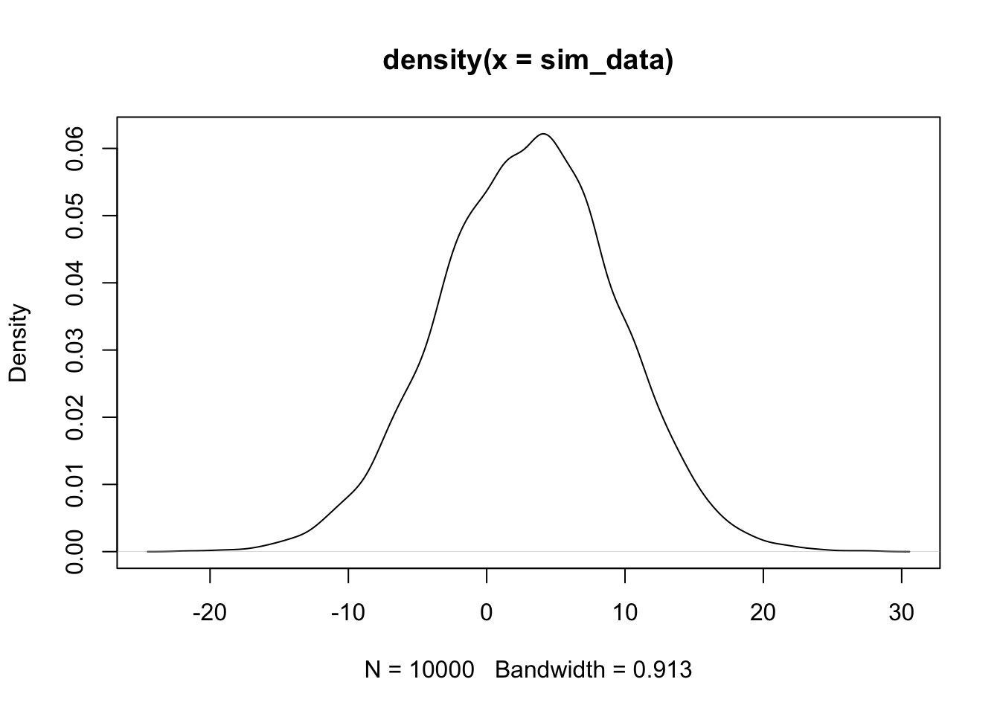
Figure 2.2: Estimated probability density of the simulated random variable 2X + 3Y, where X is standard normal and Y is normal with mean 1 and standard deviation 2. The curve is smooth and bell-shaped, centered near 3.
The plot(density()) command gives an estimated density plot of the rv that has data given in the argument of density. Let’s a
a pdf of a normal rv with the correct mean and standard deviation to the above plot, and see whether they match. The correct mean is \(2 * 0 + 3 * 1\) and the sd is \(\sqrt{4 * 1 + 9 * 4}\)
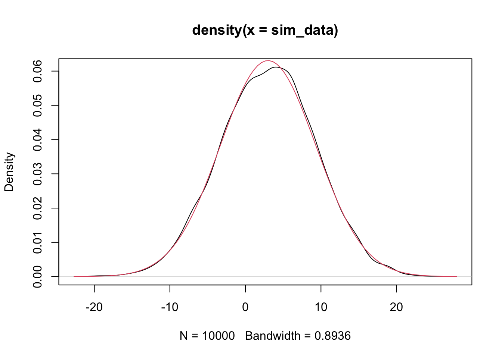
Figure 2.3: The estimated density of the simulated 2X + 3Y (black curve) overlaid with the theoretical normal distribution with mean 3 and standard deviation sqrt(40) (red curve). The two curves align closely, confirming that the distribution is normal.
Alternatively, we could have used the simulated data and estimated the mean and sd.
plot(density(sim_data))
curve(dnorm(x,
mean(sim_data),
sd(sim_data)), a
= T, col = 2) #shows up in red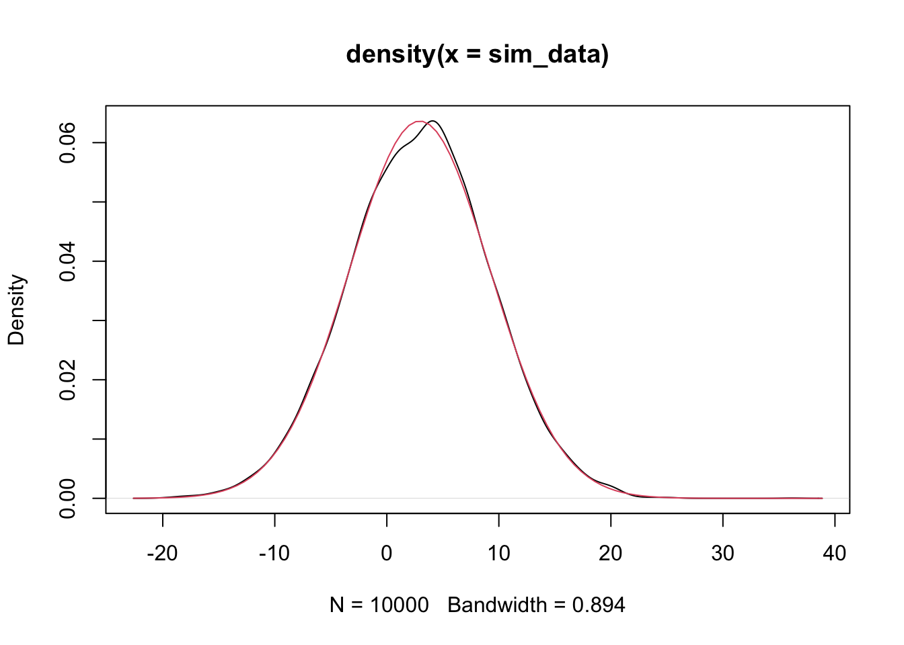
Figure 2.4: Estimated density of simulated 2X + 3Y (black) overlaid with a normal curve using the sample mean and standard deviation (red). The curves match closely, showing the simulated distribution is well-approximated by the theoretical normal.
Since the estimated pdf of the simulated data matches that of the dnorm (more or less), we conclude that the distributions are the same. Note that if there is a discontinuity in the pdf, then the simulation will not match well at that point of discontinuity. Since we will mostly be dealing with normal rvs, we’ll cross that bridge when we get to it.
Exercise 2.1 Let \(X_1, \ldots, X_5\) be normal random variables with means \(1, 2, 3, 4, 5\) and variances \(1, 4, 9, 16, 25\).
What kind of rv is \(\overline{X}\)? Include the values of any parameters.
Use simulation to plot the pdf of \(\overline{X}\) and confirm your answer to part 1.
One last concept that we will run across a lot is independence. Two random variables are independent if knowledge of the outcome of one gives no probabilistic information about the outcome of the other one. Formally, \(P(a \le X \le B|c \le Y \le d) = P(a \le X \le b)\) for all values of \(a, b, c\) and \(d\). It can be tricky to check this, and it is often something that we will assume rather than prove. However, one fact that we will use is that if \(X\) and \(Y\) are independent, then \(X + a\) and \(Y + b\) are also independent.
2.2 Linear Regression Overview
We present the basic idea of regression. Suppose that we have a collection of data that is naturally grouped into ordered pairs, \((x_1, y_1), \ldots, (x_n, y_n)\). For example, we could be measuring the height and weight of adult women, or the heights of fathers and their adult sons. In both instances, these data would naturally be grouped together into ordered pairs, and we would likely be interested in the relationship between the two variables. In particular, we would not want to assume that the variables are independent.
In the R package HistData, there is a data set that is the heights of parents and their adult children. Let’s take a look.
galton <- HistData::Galton
library(tidyverse)
ggplot(galton, aes(parent, child)) +
geom_jitter(alpha = .5)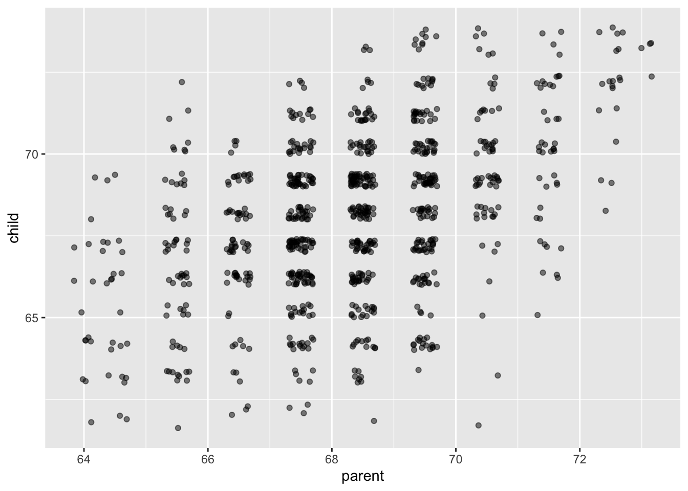
Figure 2.5: Scatterplot of Galton height data: parent average height on the x-axis versus adult child height on the y-axis. Points are jittered to reduce overplotting. The data shows a positive association — taller parents tend to have taller children.
It appears that there is a positive correlation between the height of a parent and the height of their adult child. (The parent value is the average of the father and mother of the child, and the child value has been adjusted for sex of the child. So, this may not be the best example of rigourous data collection!)
## `geom_smooth()` using formula = 'y ~ x'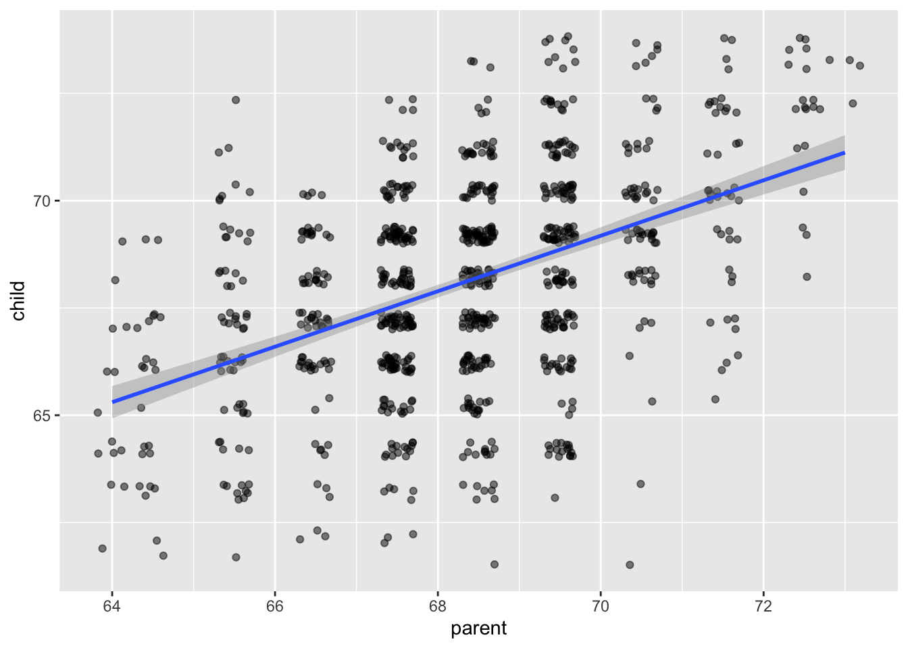
Figure 2.6: Scatterplot of Galton height data with a fitted linear regression line. The positive slope confirms the trend: children of taller parents tend to be taller, though the relationship is not perfectly linear.
The model that we are using for this data is \[ y_i = \beta_0 + \beta_1 x_i + \epsilon_i \] where the \(\epsilon_i\) are independent normal random variables with mean 0 and unknown variance \(\sigma^2\). The \(\beta_0\) and \(\beta_1\) are unknown constants. The only randomness in this model comes from the \(\epsilon_i\), which we think of as the error of the model or the residuals of the model.
In order to estimate the values of the coefficients \(\beta_0\) and \(\beta_1\), we want to choose the values that minimize the total error associated with the line \(y = \beta_0 + \beta_1 x\). There are lots of ways to do this! Let’s begin by looking at the error at a single point, \(y_i - (\beta_0 + \beta_1 x_i)\). This is the observed value \(y_i\) minus the \(predicted\) value \(\beta_0 + \beta_1 x_i\). If we are trying to minimize the total error, we will want to take the absolute value or something of the error at each point and a them up. Here are a few ways we could do this.
\[\begin{align} SSE(\beta_0, \beta_1) &= \sum_{i = 1}^n \bigl(y_i - (\beta_0 + \beta_1 x_i)\bigr)^2\\ L_1(\beta_0, \beta_1) &= \sum_{i = 1}^n \bigl|y_i - (\beta_0 + \beta_1 x_i)\bigr|\\ E_g(\beta_0, \beta_1) &= \sum_{i = 1}^n g(y_i - \beta_0 + \beta_1 x_i) \end{align}\]
where \(g\) is a loss function such that \(g(x) = g(-x)\) and \(g(x) \le g(y)\) whenever \(0 \le x \le y\). Here are a few more loss functions \(g\) that are commonly used.
curve(x^2, from = -4, to = 4, col = 1,
main = "Common Loss Functions") #black
curve(abs(x), add = T, col = 2) #red
delta <- 2
curve(delta^2 *(sqrt(1 + (x/delta)^2) - 1),
add= T,
col = 3) #green
curve(robustbase::Mchi(x, cc = 1.6, psi = "bisquare"),
add= T,
col = 4) #bue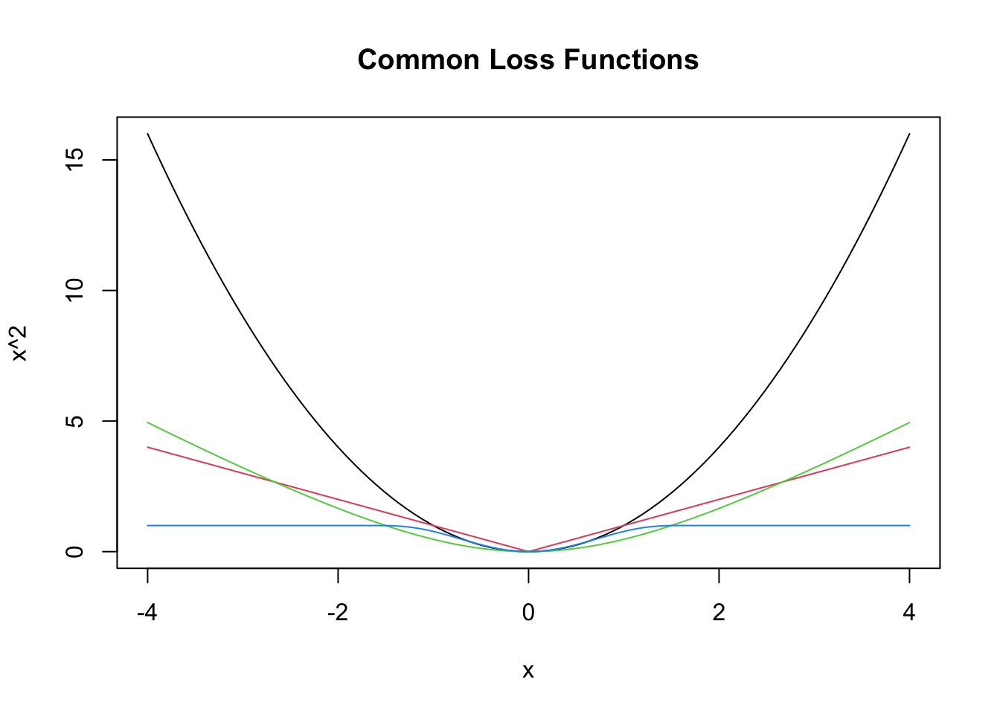
Figure 2.7: Four common loss functions plotted over x from -4 to 4. Black: squared error (x squared), a parabola. Red: absolute value (L1), a V-shape. Green: pseudo-Huber with delta=2, which is quadratic near zero and linear in the tails. Blue: Tukey bisquare, which rises to a maximum and then levels off, capping the penalty for large errors.
of the loss function evaluated at the differences between the observed and the predicted values. We will see in later sections how to do that via math, but we also have R, which is good at doing things like this.
Let’s look at a different data set. This is the world happiness data set. People were surveyed in various countries around the world and asked to imagine the best life possible for them as a 10, and the worst life possible as a 0. Then they were asked to assign a number to their current life between 0 and 10. The results of the survey are summarized here.
dd <- ardata::world_happiness
dd <- filter(dd, year == 2018)
dd <- select(dd, country_name, life_ladder, log_gdp_per_capita)
ggplot(dd, aes(x = log_gdp_per_capita, y = life_ladder)) +
geom_point()## Warning: Removed 9 rows containing missing values or values outside the scale range
## (`geom_point()`).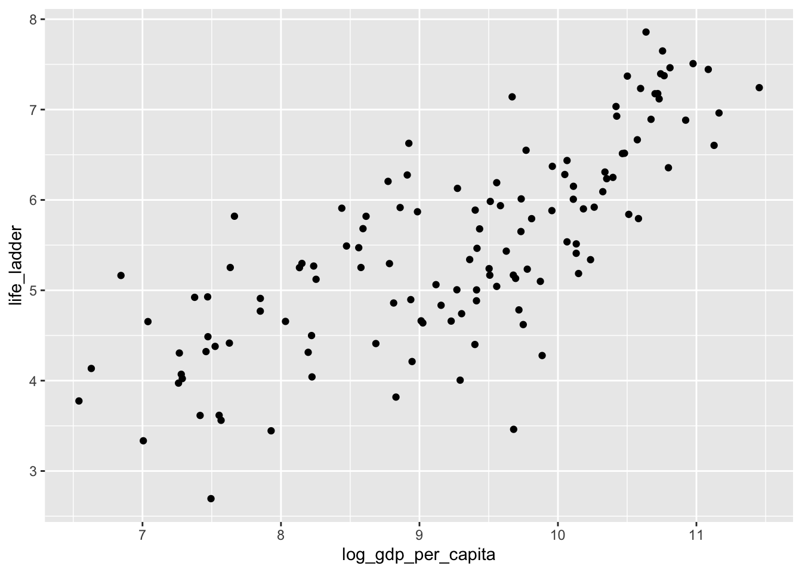
Figure 2.8: Scatterplot of world happiness data: log GDP per capita on the x-axis versus life ladder score (0-10 happiness scale) on the y-axis. There is a clear positive association — wealthier countries tend to report higher happiness scores, though there is substantial variability.
Let’s get rid of the data with missing values, and store the resulting variable in happy for future use, since dd will get overwritten later.
Now, let’s find values of \(\beta_0\) and \(\beta_1\) that minimize the SSE. (We’ll do the other loss functions below.)
The minimization function that we are going to use requires the sse function to be in a format where it accepts a single vector of values.
Now, we can call optim to optimize the SSE (which minimizes it).
## $par
## [1] -1.0302082 0.7047482
##
## $value
## [1] 64.32955
##
## $counts
## function gradient
## 79 NA
##
## $convergence
## [1] 0
##
## $message
## NULLWe see that the intercept is about -1.03 and the slope is about 0.705. Let’s plot that on the scatterplot.
ggplot(dd, aes(x = log_gdp_per_capita, y = life_ladder)) +
geom_point() +
geom_abline(slope = 0.705, intercept = -1.03) +
geom_smooth(method = "lm")## `geom_smooth()` using formula = 'y ~ x'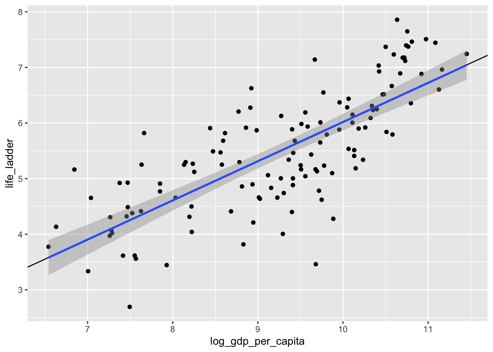
Figure 2.9: Scatterplot of happiness versus log GDP per capita with the SSE-minimizing line of best fit (slope 0.705, intercept -1.03) overlaid. The line from optim and the line from lm overlap almost perfectly, confirming that both methods yield the same result.
Yep. That’s the line that minimizes the sum of squares error, all right!
Let’s look at one more set of data, the datasauRus. You will need to install the datasauRus package if you have not already done so via install.packages("datasauRus"). The datasauRus package contains several interesting simulated data sets. The one we are interested in for now is the datasaurus_dozen, which we store into dd.
We see that the datasaurus_dozen is a list of 12 data sets (I think), and that it has \((x, y)\) coordinates, together with a dataset variable. Let’s see what datasets are available to us.
## [1] "dino" "away" "h_lines" "v_lines" "x_shape"
## [6] "star" "high_lines" "dots" "circle" "bullseye"
## [11] "slant_up" "slant_down" "wide_lines"I’ll do this example with star, but, you should follow along with a different one.
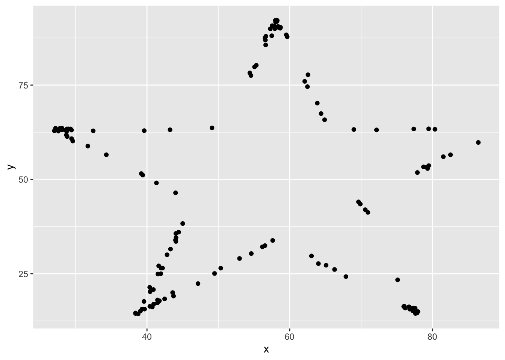
Figure 2.10: Scatterplot of the ‘star’ dataset from datasauRus, showing points arranged in the shape of a five-pointed star. This illustrates that data can have a clear non-linear structure while a linear model can still technically be fitted — it just won’t be a meaningful fit.
Yep, it looks like a star! This certainly is not of the form \(y = \beta_0 + \beta_1 x + \epsilon\) (Why?), but we can still find the line that is the best fit of this data. Not saying it will be a good fit, but it is still the one that minimizes SSE.
sse <- function(b0, b1) {
sum((star$y - (b0 + b1 * star$x))^2)
}
sse_one_argument <- function(b){
sse(b[1], b[2])
}
optim(par = c(50, 0), fn = sse_one_argument)## $par
## [1] 53.331713 -0.101214
##
## $value
## [1] 101853.4
##
## $counts
## function gradient
## 59 NA
##
## $convergence
## [1] 0
##
## $message
## NULLWe see that the line of best fit is \(y = 53.33 - .10124 x\). Now, let’s take a look at the line of best fit for all of the data sets. We’ll use ggplot and facet_wrap.
## `geom_smooth()` using formula = 'y ~ x'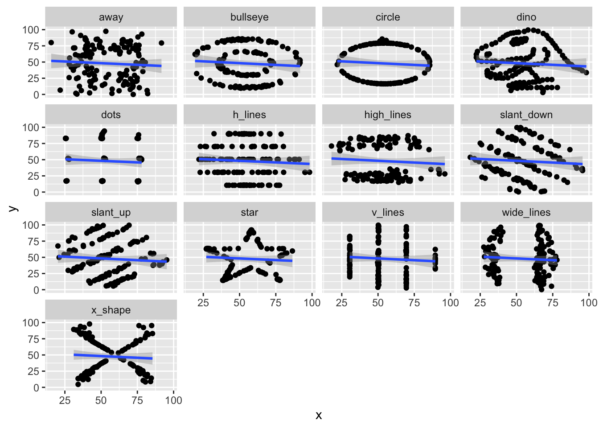
Figure 2.11: A 3-by-4 grid of scatterplots showing all 12 datasets in the datasaurus_dozen collection, each with its linear regression line overlaid. Despite the datasets having wildly different visual shapes — including a dinosaur, a star, concentric circles, and scattered clusters — all 12 regression lines have nearly identical slopes and intercepts. This is the key insight: summary statistics alone can be deeply misleading.
It turns out that all 12 of these data sets have very similar lines of best fit!
Exercise 2.2 Consider the data set ISwR::bp.obese. If you have never installed the ISwR package, you will need to run install.packages("ISwR") before accessing this data set.
Find the line of best fit for modeling blood pressure versus obesity by minimizing the SSE.
Does it appear that the model \(y = \beta_0 + \beta_1 x + epsilon\), where \(y\) is bp, \(x\) is obese, and \(\epsilon\) is normal with mean 0 and standard deviation \(\sigma\) is correct for this data?
2.3 Linear Regression with no intercept
We will present the theory of linear regression with no intercept. You will be asked as an exercise to repeat the arguments for linear regression with fixed slope of 1. The theory in these cases is easier than in the general case, but the ideas are similar.
I hope that you will be able to better understand the general case after having worked through these two special cases. Our model is \[ y_i = \beta_1 x_i + \epsilon_i \] where \(\epsilon_i\) are assumed to be normal with mean 0 and unknown variance \(\sigma^2\). We still wish to minimize the sum-sqaured error of the predicted values (\(\beta_1 x_i\)) relative to the observed values (\(y_i\)). That is, we want to minimize \[ SSE(\beta_1) = \sum_{i = 1}^n \bigl(y_i - \beta_1 x_i\bigr)^2 \] In this case, there is only one unknown constant in the equation for SSE. (But, of course, we still don’t know \(\sigma\).) Let’s math it.
\[ \begin{aligned} \frac {d}{d\beta_1} SSE(\beta_1) &= \sum_{i = 1}^n 2(\bigl(y_i - \beta_1 x_i\bigr) x_i)\\ &=2\sum_{i = 1}^n y_i x_i - 2\beta_1 \sum_{i = 1}^n x_i^2. \end{aligned} \]
Setting this equal to zero and solving for \(\beta_1\) gives \[ \beta_1 = \frac{\sum_{i = 1}^n x_i y_i}{\sum_{i = 1}^n x_i^2} \] This is our estimate for \(\beta_1\), so we add a ^ to it to make this indication. In general, hats on tops of constants will indicate our estimates for the constants based on data. \[ \hat \beta_1 = \frac{\sum_{i = 1}^n x_i y_i}{\sum_{i = 1}^n x_i^2} \]
Let’s look at some simulated data to see how this performs.
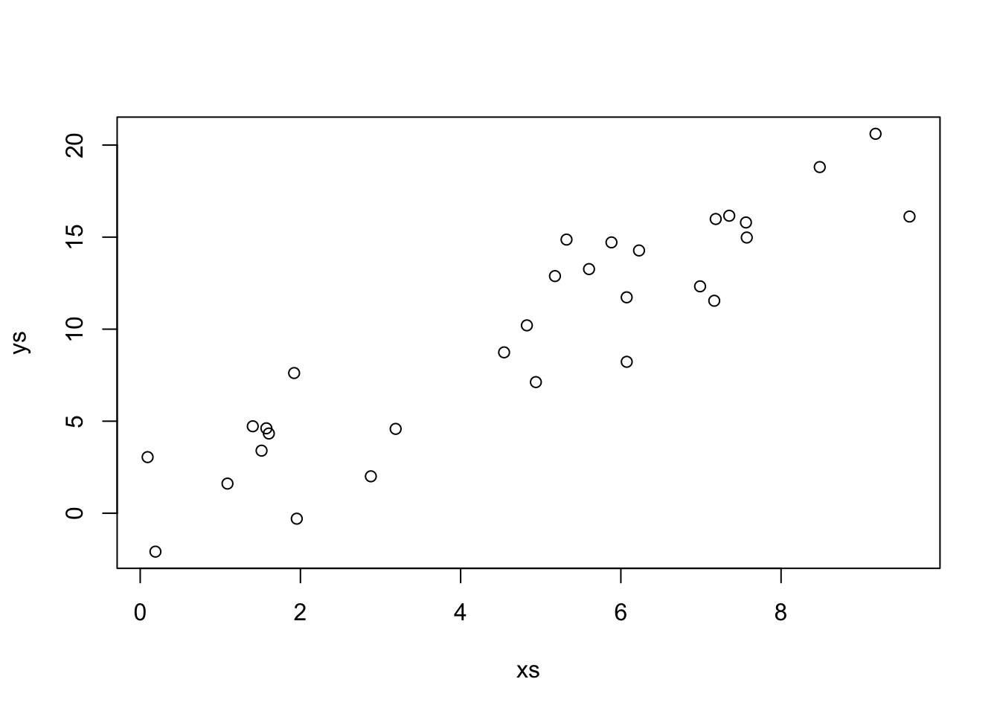
Figure 2.12: Scatterplot of 30 simulated data points following the model y = 2x + noise, where x ranges from 0 to 10. The points fan out slightly around a positive linear trend as x increases, consistent with constant variance around the line y = 2x.
Our estimate for the slope is
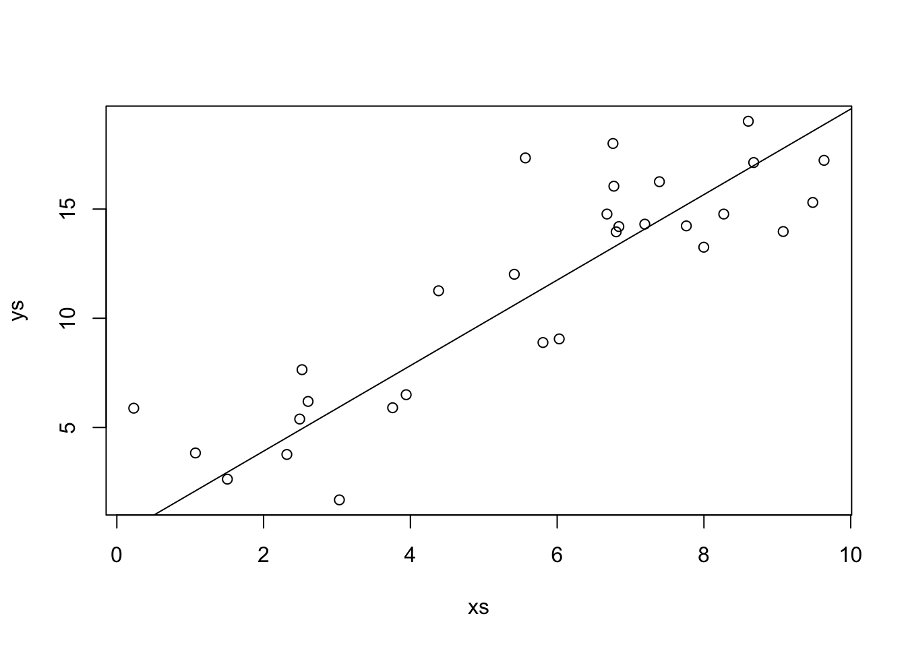
Figure 2.13: Scatterplot of simulated data with the estimated regression-through-origin line overlaid. The line passes through (0, 0) and has slope approximately 2, fitting the points well.
That looks pretty good! Let’s look at the formula for \(\hat \beta_1\) in some more detail. In particular, let’s assume that our model is correct, and that \(y_i = \beta_1 x_i + \epsilon_i\), where \(\epsilon_i\) are independent normal rvs with mean 0 and variance \(\sigma^2\). Under this model, the \(x_i\) are constants; there is nothing random about them contained in the model. However, the \(y_i\) are random variables! The \(y_i\) are the sum of a constant (\(\beta_1 x_i\)) and a normal random variable. By Theorem ??, that means that \(y_i\) is also normal. The mean of \(y_i\) is \(\beta_1 x_i\) and the variance of \(y_i\) is \(\sigma^2\).
Question Are the \(y_i\) independent or dependent? There are spoilers below, so think about this before you read further.
So, up to know, we have that \(\hat \beta_1 = \frac{\sum x_i y_i}{\sum x_i^2} = \frac{1}{\sum x_i^2}\sum x_i y_i\). The pieces are the constants \(x_i\) and the normal random variables \(y_i\). Let’s compute the expected value of \(\hat \beta_1\).
\[ \begin{aligned} E[\hat \beta_1] &= E\bigl[\frac {1}{\sum x_i^2}\sum x_i y_i\bigr]\\ &= \frac {1}{\sum x_i^2} \sum_{i = 1}^n x_i E[y_i]\\ &= \frac {1}{\sum x_i^2} \sum_{i = 1}^n x_i \beta_1 x_i\\ &= \beta_1 \frac{\sum x_i^2}{\sum x_i^2}\\ &= \beta_1 \end{aligned} \]
That’s not an easy computation, but it says something really important about regression with no intercept. It says that the expected value of our estimate for the slope, is the slope itself! We expect, on average, to be exactly right in our estimate of the slope. These types of estimators are called unbiased estimators, and we have shown that \(\hat \beta_1\) is an unbiased estimator of \(\beta_1\). That is definitely a desirable property of an estimator, though it is not necessarily a deal-breaker if an estimator is biased. I’m looking at you, sample standard deviation.
Let’s check out what this would mean via simulations. We assume that the data comes from \(y = 2 x + \epsilon\), where \(\epsilon \sim N(0,\sigma = 3)\). Let’s imagine that we have fixed values of xs, but this is not really necessary.
Then we will create a data set and estimate the slope.
## [1] 1.899664Next, we put that inside of replicate to get a large sample of possible estimates of slopes.
And we compute the mean. We should get something really close to 2, which is the true value of the slope.
## [1] 1.999716To be safe, we should repeat that a few times to see if the estimated expected value of \(\hat \beta_1\) is on both sides of 2, and doesn’t seem to be biased. More generally, we know that \(\hat \beta_1\) is a normal random variable with mean 2. What is its variance? Well, since the \(y_i\) are independent, we can compute the variance as follows.
\[ \begin{aligned} V(\hat \beta_1) &= V(\frac {1}{\sum x_i^2}\sum x_i y_i)\\ &= \frac{1}{(\sum x_i^2)^2} \sum x_i^2 V(y_i)\\ &= \frac{1}{(\sum x_i^2)^2} \sum x_i^2 \sigma^2\\ &= \frac{\sigma^2}{\sum x_i^2} \end{aligned} \]
Again, let’s check that is true via… simulations!
## [1] 0.008805545## [1] 0.008847458Looks pretty good! Again, we would need to repeat a few times to be sure. Finally, let’s estimate the density function of \(\hat \beta_1\) and compare it to that of a normal with the above mean and standard deviation.
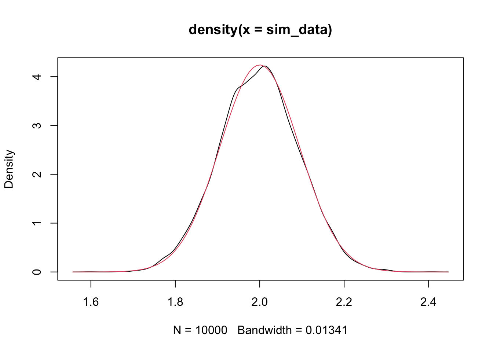
Figure 2.14: Estimated density of the simulated slope estimator beta-hat-1 (black curve) overlaid with the theoretical normal distribution with mean 2 and standard deviation sigma divided by sqrt(sum of x_i squared) (red curve). The curves match closely, confirming the theoretical result.
That is compelling to me. We have seen that \(\hat \beta_1\) is normal with mean \(\beta_1\) and standard deviation \(\frac{\sigma}{\sqrt{\sum x_i^2}}\).
If we wanted to estimate all of the parameters in the model, though, we would need to come up with an estimate for \(\sigma\) or \(\sigma^2\). The traditional way to estimate \(\sigma^2\) given a random sample \(v_i\) from a population with known mean \(\mu\) is \(S^2 \approx \frac 1n \sum_{i = 1}^n (v_i - \mu)^2\). If we don’t know \(\mu\), then we estimate it from the data, and use \(S^2 = \frac 1{n-1} \sum_{i = 1}^n (v_i - \overline{v})^2\), where the rule of thumb is that you subtract one from the denominator for each parameter that you estimated. In this case, we estimated \(\mu\), so we subtract 1.
In our case, we have a random sample from a population with known mean 0, but we are estimating one parameter still, namely \(\beta\). Recall that \(y_i \sim \beta x_i + \epsilon_i\), where \(\epsilon_i\) are iid normal random variables with mean 0 and standard deviation \(\sigam\). Therefore, if we knew \(\beta\), it would be true that \(y_i - \beta x_i \sim N(0, \sigma)\), and we could use that to estimate \(\sigma^2 \approx \frac 1n \sum_{i = 1}^n (y_i - \beta x_i)^2\). But, we don’t know \(\sigma\), so we have to approximate it with \(\hat \beta\), which means we subtract one from the downstairs. Our final guess is \[ \hat \sigma^2 = \frac 1{n - 1}\sum_{i = 1}^n \left(y_i - \hat \beta x_i\right)^2 \] Let’s check via simulation whether this is a good estimate.
We assume that the true generative process of the data is \(y = 2 * x + \epsilon\), where \(\epsilon \sim N(0, 3)\), so that \(\sigma^2 = 9\). We take a sample size of \(n = 100\) as follows.
set.seed(4870)
x <- runif(100, 0, 10)
y <- 2 * x + rnorm(100, 0, 3)
beta_hat <- sum(x * y) / sum(x^2)
sigma_hat <- 1/99 * sum((y - beta_hat * x)^2)
sigma_hat## [1] 11.93586We get 11.9, which isn’t all that close to the correct value, but let’s see what happens on average if we repeat the process a bunch of times.
sigmas <- replicate(10000, {
y <- 2 * x + rnorm(100, 0, 3)
beta_hat <- sum(x * y) / sum(x^2)
sigma_hat <- 1/99 * sum((y - beta_hat * x)^2)
sigma_hat
})
mean(sigmas)## [1] 9.011291We see that, on avereage, the estimate of \(\sigma^2\) is right on! That is what we mean by an unbiased estimator of \(\sigma^2\).
Show that \(\hat \sigma^2 = \frac 1n \sum_{i = 1}^n \left(y_i - 2 * x_i\right)^2\) is an unbiased estimator for \(\sigma^2\), using the same set-up as above.
Exercise 2.3 Suppose you wish to model data \((x_1, y_1), \ldots, (x_n, y_n)\) by \[ y_i = \beta_0 + x_i + \epsilon_i \] \(\epsilon_i\) are iid normal with mean 0 and standard deviation \(\sigma\).
Find the \(\beta_0\) that minimizes the SSE, \(\sum(y_i - (\beta_0 + x_i))^2\) in terms of \(x_i\) and \(y_i\). Call this estimator \(\hat \beta_0\).
What kind of random variable is \(\hat \beta_0\)? Be sure to include both its mean and standard deviation or variance (in terms of the \(x_i\)).
Verify your answer via simulation when the true relationship is \(y = 2 + x + \epsilon\), where \(\epsilon\) is normal with mean 0 and standard deviation 1.
2.4 The full model
In this section, we discuss the model
\[ y_i = \beta_0 + \beta_1 x_i + \epsilon_i \]
We minimize
\[ SSE(\beta_0, \beta_1) = \sum \bigl(y_i - (\beta_0 + \beta_1 x_i)\bigr)^2 \] over all choices of \(\beta_0\) and \(\beta_1\) by taking the partials with respect to \(\beta_0\) and \(\beta_1\), setting equal to zero, and solving for \(\beta_0\) and \(\beta_1\). We omit the details. But, here are the solutions that you obtain.
\[\hat \beta_0 = \overline{y} - \hat \beta_1 \overline{x}\]
\[\hat \beta_1 = \frac{\sum x_i y_i - \frac 1n \sum x_i \sum y_i}{\sum x_i^2 - \frac 1n \sum x_i \sum x_i}\]
As before, we can see that \(\hat \beta_0\) and \(\hat \beta_1\) are linear combinations of the \(y_i\), so they are normal random variables. We won’t go through the algebraic details, but it is true that \(\hat \beta_0\) is normal with mean \(\beta_0\) and variance \(\sigma^2 \frac{\sum x_i^2}{n\sum x_i^2 - \sum x_i \sum x_i}\), while \(\hat \beta_1\) is normal with mean \(\beta_1\) and variance \(\frac{n\sigma^2}{n \sum x_i^2 - \sum x_i \sum x_i}\). Let’s check this with some simulations!
xs <- runif(30, 0, 10)
sx <- sum(xs)
sx2 <- sum(xs^2)
ys <- 1 + 2 * xs + rnorm(30, 0, 3)
lm(ys ~ xs)$coefficients[1] #pulls out the intercept## (Intercept)
## -0.3164941sim_data <- replicate(10000, {
ys <- 1 + 2 * xs + rnorm(30, 0, 3)
lm(ys ~ xs)$coefficients[1]
})
mean(sim_data) #should be close to 1## [1] 1.003177## [1] 1.416889## [1] 1.411109Let’s also plot it to double check normality.
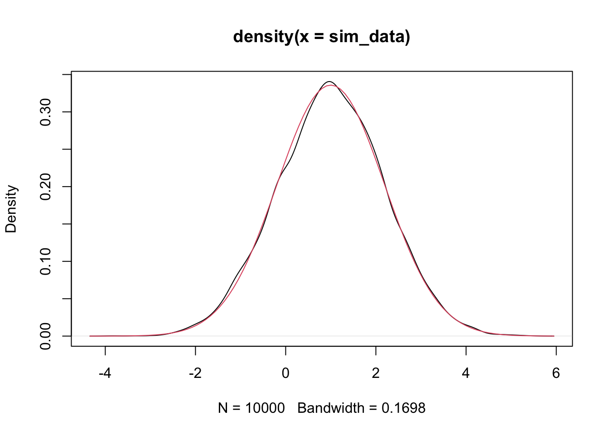
Figure 2.15: Estimated density of 10,000 simulated intercept estimates beta-hat-0 (black) overlaid with the theoretical normal distribution with mean 1 and the derived standard deviation sigma_b0 (red). The close match confirms that beta-hat-0 is approximately normally distributed with the predicted parameters.
We do a similar simulation for \(\beta_1\) below.
xs <- runif(30, 0, 10)
sx <- sum(xs)
sx2 <- sum(xs^2)
ys <- 1 + 2 * xs + rnorm(30, 0, 3)
lm(ys ~ xs)$coefficients[2] #pulls out the intercept## xs
## 1.93346sim_data <- replicate(10000, {
ys <- 1 + 2 * xs + rnorm(30, 0, 3)
lm(ys ~ xs)$coefficients[2]
})
mean(sim_data) #should be close to 2## [1] 1.998499## [1] 0.02673423## [1] 0.0275661And again, we plot the density and compare to normal curve.
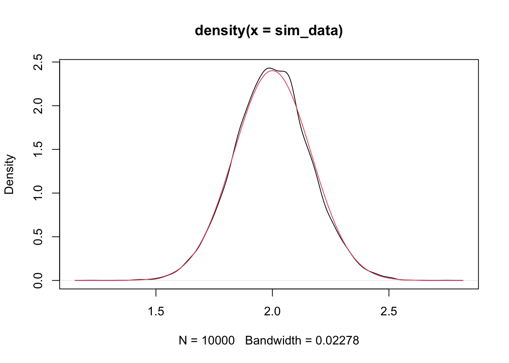
Figure 2.16: Estimated density of 10,000 simulated slope estimates beta-hat-1 from the full model (black) overlaid with the theoretical normal distribution with mean 2 and standard deviation sigma_b1 (red). The curves overlap closely, confirming the theoretical distribution.
We can use this information to perform hypothesis tests and create confidence intervals!
2.4.1 Hypothesis Test Interlude
Recall how hypothesis tests work. We have a probability distribution that depends on a parameter \(\alpha\), say. There is some default, or conventional wisdom, idea about the value of \(\alpha\). We call this value \(\alpha_0\). We are testing whether \(\alpha = \alpha_0\) or whether \(\alpha \not= \alpha_0\). Formally, we vall \(H_0: \alpha = \alpha_0\) the null hypothesis and \(H_a: \alpha \not= \alpha_0\) the alternative hypothesis.
The format of the hypothesis test works as follows. We create a test statistic \(T\) that depends on the random sample we take and the parameter \(\alpha\). We need to be able to derive or simulate the probability density function of \(T\). When we do that, we then compute a \(p\)-value, which is the probability of obtaining a test statistic \(T\), which is as likely or more unlikely than the one that we did compute, assuming that \(H_0\) is true. If this \(p\)-value is small, say less than \(.05\), then we reject \(H_0\) in favor of \(H_a\). Otherwise, we fail to reject \(H_0\).
In regression, it is common to do hypothesis tests on \(\beta_1\), the slope. It is less common to do them on the intercept, because often the intercept is harder to interpret in the context of a problem. Let’s return to the happiness data, which is stored in happy. We computed a line of best fit of \(y = -1.03 + 0.705 x\). A natural question to ask is whether the slope is actually zero, or whether it is not zero. Formally, we have the hypothesis test \(H_0: \beta_1 = 0\) versus \(H_a: \beta_1 \not= 0\).
We need to assume, at this point, that the variance of \(\epsilon_i\) is known. We will see below what to do when it is not known. We assume that the variance is 1/2, so that the standard deviation is \(1/\sqrt{2} \approx 0.71\). Recall that \(\hat \beta_1\) is normal with mean \(\beta_1\) and standard deviation \(\sqrt{\frac{n\sigma^2}{n \sum x_i^2 - \sum x_i \sum x_i}}\). In this case, \(n = 127\) and \(\sigma^2 = 1/2.\) Therefore, the standard deviation of \(\hat \beta_1\) is
sigma_b1 <- sqrt((127 * 1/2)/(127 * sum(happy$log_gdp_per_capita^2) - sum(happy$log_gdp_per_capita)^2))Under the null hypothesis, we have that the mean of \(\hat \beta_1\) is 0. So, if the null hypothesis is true, then \(\hat \beta_1\) is normal with mean 0 and standard deviation about 0.053. Let’s plot the pdf.
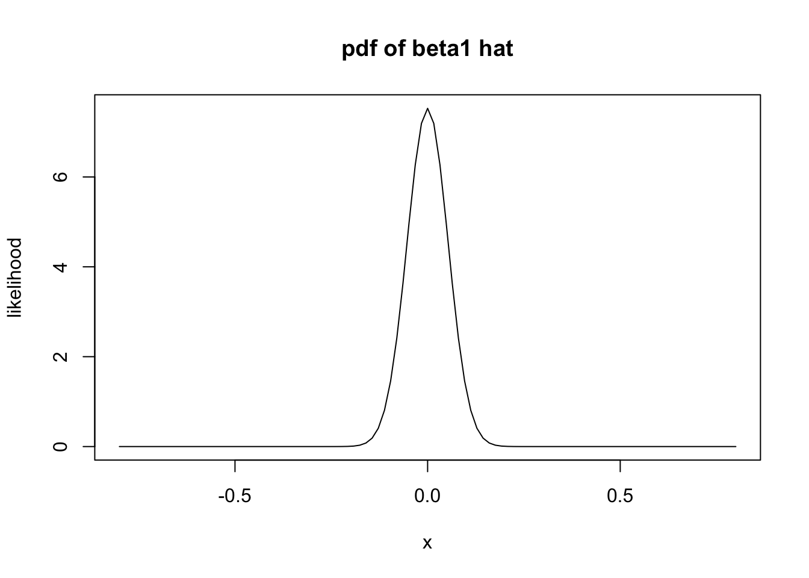
Figure 2.17: The probability density function of beta-hat-1 under the null hypothesis that beta-1 = 0, assuming known variance. The curve is a narrow normal distribution centered at 0 with standard deviation approximately 0.053. The observed slope of 0.705 falls far in the right tail, making it an extremely unlikely value under the null hypothesis.
It is very unlikely that the computed slope would be 0.705 or larger! The \(p\)-value is obtained by computing the probability of getting 0.705 or larger given that \(H_0\) is true.
## [1] 1.1285e-40Wow! To be fair, we would also want to see the probability of getting less than -0.705, and add it to the above.
## [1] 2.257e-40Our \(p\)-value is \(2.257 \times 10^{-40}\). We reject \(H_0\) and conclude that the slope is not zero.
That’s all well and good, but… We don’t know what \(\sigma\) is at all in this setting. We need to figure out how to estimate \(\sigma\), and we need to figure out how that affects our \(p\)-value computation!!
We start with figuring out how to estimate \(\sigma^2\). Let’s suppose that our data comes from \(y_i = 1 + 2 * x_i + \epsilon_i\), where \(\epsilon_i\) is normal with mean 0 and standard deviation 3. We don’t assume that we know any of that information. But, if we did know \(\beta_0 = 1\) and \(\beta_1 = 2\), then we could compute \(y_i - (1 + 2 * x_i)\), and that would be a random sample from \(\epsilon\)! We could use sd to estimate the standard deviation or var to estimate the variance! Our idea, then, is to estimate \(\hat \beta_0\) and \(\hat \beta_1\), and then \(y_i - (\hat \beta_0 + \hat \beta_1 x_i)\) is an estimate of a sample from \(\epsilon_i\)! Maybe a good estimate for \(\sigma^2\) would be to use var on that!
Notationally, we call \(y_i - (\hat \beta_0 + \hat \beta_1 x_i)\) the residuals of the model.
xs <- runif(30, 0, 10)
ys <- 1 + 2 * xs + rnorm(30, 0, 3)
beta_0 <- lm(ys ~ xs)$coefficients[1]
beta_1 <- lm(ys ~ xs)$coefficients[2]
ys - (beta_0 + beta_1 * xs)## [1] -0.1014982 2.5698578 3.6383951 0.7602879 1.6966693 1.2972465
## [7] -5.7590968 0.3032853 -2.3750249 0.4603466 1.6151087 1.5963561
## [13] -3.3464870 0.5418336 -2.8979343 2.6085748 -1.5130296 4.3724794
## [19] -1.3967273 2.0385085 -2.5307011 -0.2403657 -2.1609787 2.7163617
## [25] 1.9960806 -2.7550912 1.4334889 -3.8552792 0.8306420 -1.5433087Now, to estimate \(\sigma^2\), we could use the var function.
## [1] 5.984329Let’s put this inside of replicate to see whether this is an unbiased estimator of \(\sigma^2\).
sim_data <- replicate(10000, {
ys <- 1 + 2 * xs + rnorm(30, 0, 3)
mod <- lm(ys ~ xs)
beta_0 <- mod$coefficients[1]
beta_1 <- mod$coefficients[2]
var(ys - (beta_0 + beta_1 * xs))
})
mean(sim_data)## [1] 8.701956Hmmm, it looks like it is too small. It can be provent hat estimating \(\sigma^2\) in this way is a biased way to do it. The formula for var is \(\frac {1}{n-1} \sum_{i = 1}^n (x_i - \overline{x})^2\). There is a rule of thumb that, for each parameter that you estimate, you need to subtract one from the \(n\) in the denominator in front of the sum. Since we are estimating \(\beta_0\) and \(\beta_1\), we would need to subtract 2 from \(n\). In other words, we need to multiple var by \(\frac {n-1}{n-2}\).
sim_data <- replicate(10000, {
ys <- 1 + 2 * xs + rnorm(30, 0, 3)
mod <- lm(ys ~ xs)
beta_0 <- mod$coefficients[1]
beta_1 <- mod$coefficients[2]
var(ys - (beta_0 + beta_1 * xs)) * 29/28
})
mean(sim_data)## [1] 8.964182That looks better! That is our unbiased estimator of \(\sigma^2\)! What kind of rv is \(\hat \sigma^2\), which is more commonly denoted \(S^2\). Well. \(S^2\) itself is not one that we are familiar with, but \((n - 2) S^2/\sigma^2\) is a \(\chi^2\) random variable with \(n - 2\) degrees of freedom.
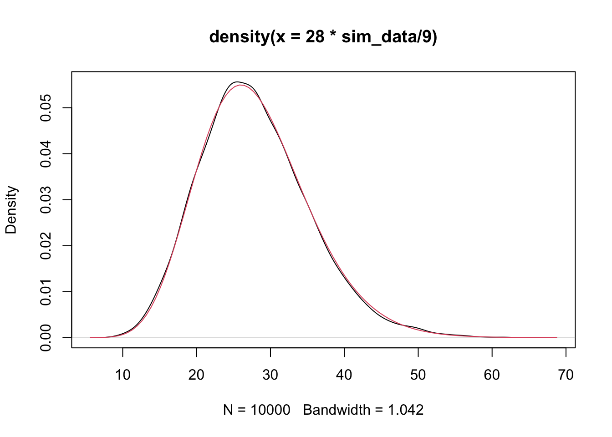
Figure 2.18: Estimated density of the scaled variance estimator (n-2) S-squared divided by sigma-squared from simulation (black), overlaid with the chi-squared distribution with 28 degrees of freedom (red). The curves match closely, confirming the theoretical result that the scaled estimator follows a chi-squared distribution.
Now, we are ready to do actual hypothesis testing on the slope without assuming that we know the underlying variance.
:::{.theorem, #betazerodist} Let \((x_1, y_1), \ldots, (x_n, y_n)\) be a random sample from the model \[ y_i = \beta_0 + \beta_1 x_i + \epsilon_i \] where \(\epsilon_i\) are iid normal random variables with mean 0 and variance \(\sigma^2\). Then, \[ \frac{\hat \beta_1 - \beta_1}{\sqrt{\frac{n S^2}{n \sum x_i^2 - \sum x_i \sum x_i}}} \] follows a \(t\) distribution with \(n - 2\) degrees of freedom. :::
To prove this, we will once again use simulations. We assume \(\beta_0 = 1\), \(\beta_1 = 2\) and \(\sigma = 3\).
n <- 30
sim_data <- replicate(10000, {
ys <- 1 + 2 * xs + rnorm(30, 0, 3)
mod <- lm(ys ~ xs)
beta_1 <- mod$coefficients[2]
a <- summary(mod)
(beta_1 - 2)/(sqrt(n * a$sigma^2/(n * sum(xs^2) - sum(xs)^2)))
})
plot(density(sim_data))
curve(dt(x, 28), add = T, col = 2)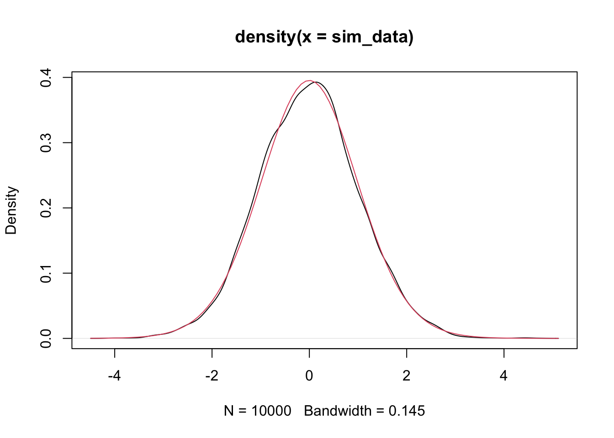
Figure 2.19: Estimated density of the standardized slope estimator (beta-hat-1 minus 2) divided by its standard error, from 10,000 simulations (black), overlaid with the t distribution with 28 degrees of freedom (red). The close match confirms Theorem betazerodist: the standardized slope estimator follows a t distribution.
Example 2.1 Using the \(t\) distribution to do a hypothesis test.
We consider the happiness data set again. Our model is \(y_i = \beta_0 + beta_1 x_i + \epsilon_i\), where \(\epsilon_i\) are iid normal with mean 0 and variance \(\sigma^2\). The null hypothesis is \(H_0: \beta_1 = 0\) and the alternative is \(H_0: \beta_1 \not= 0\). Theorem ?? tells us that the test statistic
\[
\frac{\hat \beta_1 - \beta_1}{\sqrt{\frac{n S^2}{n \sum x_i^2 - \sum x_i \sum x_i}}}
\]
is \(t\) with 125 degrees of freedom, since there are 127 observations in happy.
We compute the value of the test statistic by putting in our estimate for \(\hat \beta_1\), which we can pull out of lm as 0.7046, and our estimate for \(S^2\).
mod <- lm(life_ladder ~ log_gdp_per_capita, data = happy)
beta_1_hat <- mod$coefficients[2]
S <- sqrt(var(mod$residuals) * 126/125)Therefore, the value of the test statistic is
(beta_1_hat - 0)/(sqrt((127 * S^2)/(127 * sum(happy$log_gdp_per_capita^2) - sum(happy$log_gdp_per_capita)^2)))## log_gdp_per_capita
## 13.08232That is, again, a very unlikely value for the test statistic that is \(t\) with any degrees of freedom!!
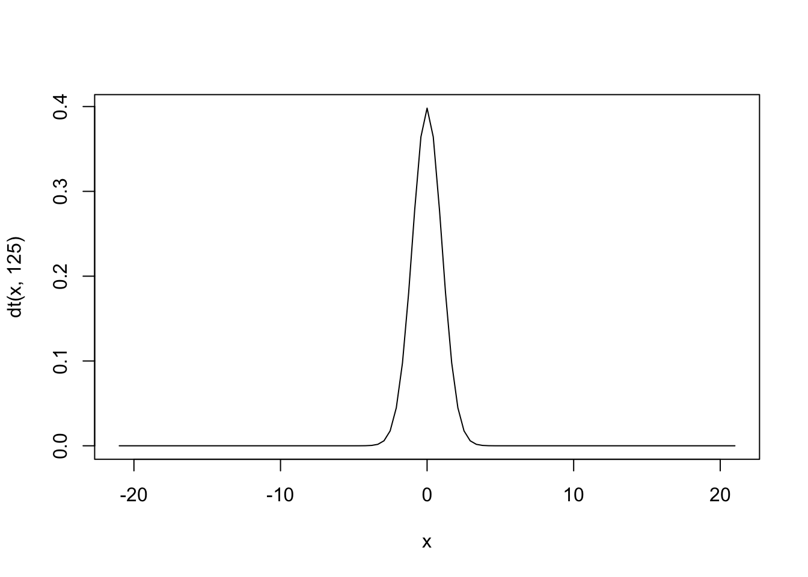
Figure 2.20: The probability density function of the t distribution with 125 degrees of freedom, plotted from -21 to 21. The curve is symmetric and bell-shaped. The observed test statistic of approximately 13.08 falls far in the right tail, well outside the visible bulk of the distribution, indicating an extremely small p-value.
To compute the \(p\)-value, we use pt as follows:
## [1] 3.604795e-25And, we would reject the null hypothesis at any reasonable \(\alpha\) level. However, note that the \(p\)-value is 15 orders of magnitude greater than the \(p\)-value that we computed when we assumed that we knew \(\sigma\). That is quite substantial!
Exercise 2.4 Consider the data set HistData::Galton that we looked at briefly. Assume the model \(y_i = \beta_0 + \beta_1 x_i + \epsilon_i\), and do a hypothesis test of \(H_0: \beta_1 = 1\) versus \(H_a: \beta_1 \not= 1\). Explain what this means in the context of the data.
2.5 Using different loss functions
In this section, we return to the model \[ y = \beta_0 + \beta_1 x + \epsilon \] where \(\epsilon\) is normal with mean 0 and variance \(\sigma^2\).
We show how to get values for \(\beta_0\) and \(\beta_1\) that minimize \[ \sum_{i = 1}^n g(y_i - (\beta_0 + \beta_1 x_i))^2 \] where \(g\) is even, \(g\) is decreasing for \(x \le 0\), and increasing for \(x \ge 0\). Examples of \(g\) were given above, such as \(g(x) = x^2\), \(g(x) = |x|\), or any of the 4 plots in the graph here.
curve(x^2, from = -4, to = 4, col = 1,
main = "Common Loss Functions") #black
curve(abs(x), add = T, col = 2) #red
delta <- 2
curve(delta^2 *(sqrt(1 + (x/delta)^2) - 1),
add= T,
col = 3) #green
curve(robustbase::Mchi(x, cc = 1.6, psi = "bisquare"),
add= T,
col = 4) #bue
Figure 2.21: Four common loss functions plotted over x from -4 to 4. Black: squared error, a parabola. Red: absolute value (L1), a V-shape. Green: pseudo-Huber with delta=2, quadratic near zero and linear in the tails. Blue: Tukey bisquare with cc=1.6, which plateaus and caps the penalty for large errors.
Let’s find the values of \(\beta_0\) and \(\beta_1\) that minimize the \(L^1\) error, which is \[ \sum \bigl|y_i - (\beta_0 + \beta_1 x_i)| \] in the happiness data set. We will also compare that to the values we got using SSE. Recall that the data is stored in `happy.
As a reminder, we can get the SSE estimator for \(\beta_0\) and \(\beta_1\) via lm as follows.
##
## Call:
## lm(formula = life_ladder ~ log_gdp_per_capita, data = happy)
##
## Coefficients:
## (Intercept) log_gdp_per_capita
## -1.0285 0.7046The usage y ~ x is read as “y as described by x” and the response variable always comes first. The predictor(s) come after the ~.
Now let’s minimize the \(L^1\) error. We start by defining our loss function, \(g\).
Then, we define our total \(L^1\) error as
As before, we have to re-write this function to only accept a single argument because that is how optim works.
Now we are ready! We need to provide a guess to optim and the function we are minimizing. Let’s try a slope of 1 and an intercept of 0.
## $par
## [1] -0.8373535 0.6910757
##
## $value
## [1] 73.30576
##
## $counts
## function gradient
## 97 NA
##
## $convergence
## [1] 0
##
## $message
## NULLWe see that “the” line of best fit in this case is \(y = -0.837 0.691 x\) rather than \(y = -1.03 + 0.705 x\). I will leave it to you to decide whether the difference between those coefficients is meaningful. Let’s plot both lines.
ggplot(happy, aes(x = log_gdp_per_capita, y = life_ladder)) +
geom_point() +
geom_smooth(method = "lm", se = FALSE) + #SSE minimizer
geom_abline(slope = 0.691, intercept = -0.837)## `geom_smooth()` using formula = 'y ~ x'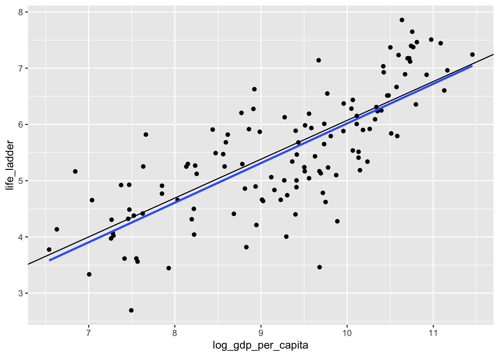
Figure 2.22: Scatterplot of happiness versus log GDP per capita with two overlaid lines of best fit: the blue line minimizes SSE (via lm), and the black line minimizes the L1 error (via optim). The two lines are similar but not identical — the L1 line is slightly less influenced by countries with unusually low happiness for their income level.
What is happening? Well, when we look at the scatterplot, we see that there are some countries with abnormally low happiness for their gdp. The SSE worries about fitting those points more than the \(L^1\) error does, and the corresponding line that minimizes SSE is closer to those points that are kind of far away from the lines. This behavior can either be a feature or a bug for the method chosen. Or both.
Next up, we look at the psuedo-Huber loss function \(g(x) = \delta^2 \sqrt{1 + (x/\delta)^2} - \delta^2\). In this loss function, there is a parameter \(\delta\) that we can use to adjust the function. Let’s plot it for a few different values of \(\delta\).
curve(sqrt(1 + x^2) - 1, from = -5, to = 5, ylim = c(0, 5))
delta = .5
curve(delta^2 *sqrt(1 + x^2/delta^2) - delta^2, add= T, col = 2)
delta = 2
curve(delta^2 *sqrt(1 + x^2/delta^2) - delta^2, add = T, col = 3)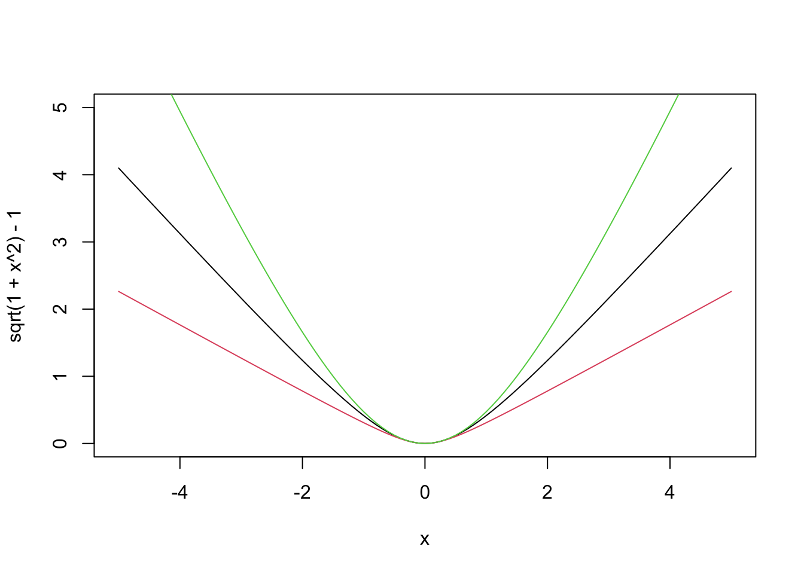
Figure 2.23: Three pseudo-Huber loss functions plotted for delta = 1 (black), delta = 0.5 (red), and delta = 2 (green). All three are symmetric, equal zero at x = 0, and grow as x moves away from zero. Smaller delta values make the function behave more like L1 (linear growth); larger delta values make it behave more like squared error (quadratic growth).
This loss function combines elements of both SSE and \(L^1\). When the error \(y_i - (\beta_0 + \beta_1 x_i)\) is small, we get behavior that looks like a quadratic \(g(x) = x^2\). When the error is large, \(g\) flattens out and looks like a straight line. When \(\delta\) is small, the loss function behaves like \(L^1\), and when \(\delta\) is big, it behaves like SSE.
This loss function is an attempt to strike a balance between the two methods that we have seen so far. With the set-up from above, we only need to change the function \(g\) to find the lines of best fit.
Now we can try this with a few different values of \(\delta\). Remember, when \(\delta\) is small, we expect to get results similar to what we got with \(L^1\), and when \(\delta\) is big, we expect to get similar to SSE, which as a reminder, were \(y = -0.837 0.691 x\) rather than \(y = -1.03 + 0.705 x\)
## $par
## [1] -0.8740431 0.6934752
##
## $value
## [1] 6.284509
##
## $counts
## function gradient
## 77 NA
##
## $convergence
## [1] 0
##
## $message
## NULL## $par
## [1] -1.0306062 0.7062522
##
## $value
## [1] 27.88364
##
## $counts
## function gradient
## 75 NA
##
## $convergence
## [1] 0
##
## $message
## NULLIndeed, we do get similar results, though not identical. If we are thinking of using this loss function, then we probably want to choose a value of \(\delta\) that gives results that are in-between the two extremes, in some sense. The package rlm automates this, not from the point of view of trying to always get something in between, but from the point of view of controling outlier effects.
## Call:
## rlm(formula = life_ladder ~ log_gdp_per_capita, data = happy,
## psi = MASS::psi.huber)
## Converged in 4 iterations
##
## Coefficients:
## (Intercept) log_gdp_per_capita
## -1.0560121 0.7091396
##
## Degrees of freedom: 127 total; 125 residual
## Scale estimate: 0.837We see that we don’
coefficients that are in between the two sets of coefficients that we computed previously. However, I believe that MASS implements the true Huber loss function, rather than the psuedo-Huber loss function that we implemented above so we aren’t really comparing apples to apples.
The rlm function also implements psi.bisquare, which is Tukey’s bi-square function. This loss function also has a parameter, which is denoted by cc in the robustbase package. Here are some plots.
curve(robustbase::Mchi(x, cc = 1, psi = "bisquare"), from = -2, to = 2)
curve(robustbase::Mchi(x, cc = 0.5, psi = "bisquare"), add = T, col = 2)
curve(robustbase::Mchi(x, cc = 2, psi = "bisquare"), add = T, col = 3)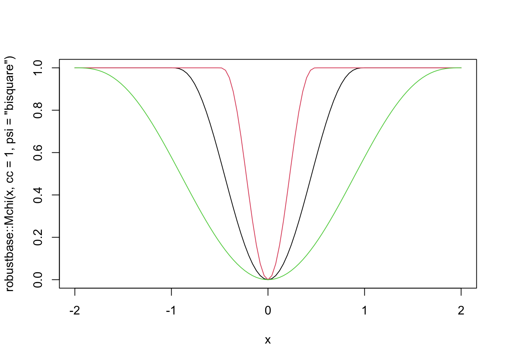
Figure 2.24: Three Tukey bisquare loss functions with different cc parameters: cc=1 (black), cc=0.5 (red), cc=2 (green). All three rise from zero at x=0 and then plateau at a maximum of 1. The cc parameter controls where the plateau begins: smaller cc values plateau sooner, meaning errors beyond that threshold are all penalized equally.
The thing to know about this loss function is that for “small” errors, the loss function behaves like SSE. But, there is a maximum error allowed of 1, and the cc parameter gives the value of the raw error that corresponds to when the loss function starts equaling 1. In other words, if cc = 1, then all errors between observed and predicted that are bigger than 1 are penalized the same amount! This has the benefit of limiting the impact that a single (or multiple) outliers can have on the estimation of the line of best fit. Let’s first look at what happens with the happiness data, then we’ll switch over to simulated data.
##
## Attaching package: 'MASS'## The following object is masked from 'package:dplyr':
##
## select## Call:
## rlm(formula = life_ladder ~ log_gdp_per_capita, data = happy,
## psi = psi.bisquare)
## Converged in 4 iterations
##
## Coefficients:
## (Intercept) log_gdp_per_capita
## -1.0410932 0.7076074
##
## Degrees of freedom: 127 total; 125 residual
## Scale estimate: 0.839We don’t see a big change by doing it like this.
Now let’s set up a funky simulated data set.
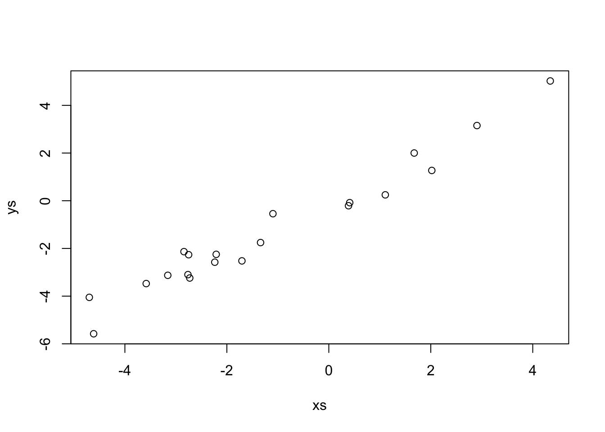
Figure 2.25: Scatterplot of 20 simulated data points where y is approximately equal to x plus small random noise. The points fall tightly along a diagonal line from lower-left to upper-right, indicating a strong positive linear relationship.
This data looks a lot like \(y = x\). Indeed,
##
## Call:
## lm(formula = ys ~ xs)
##
## Coefficients:
## (Intercept) xs
## -0.1094 1.0060Let’s see what happens when we add an outlier that changes it to look like possible \(y = -x\).
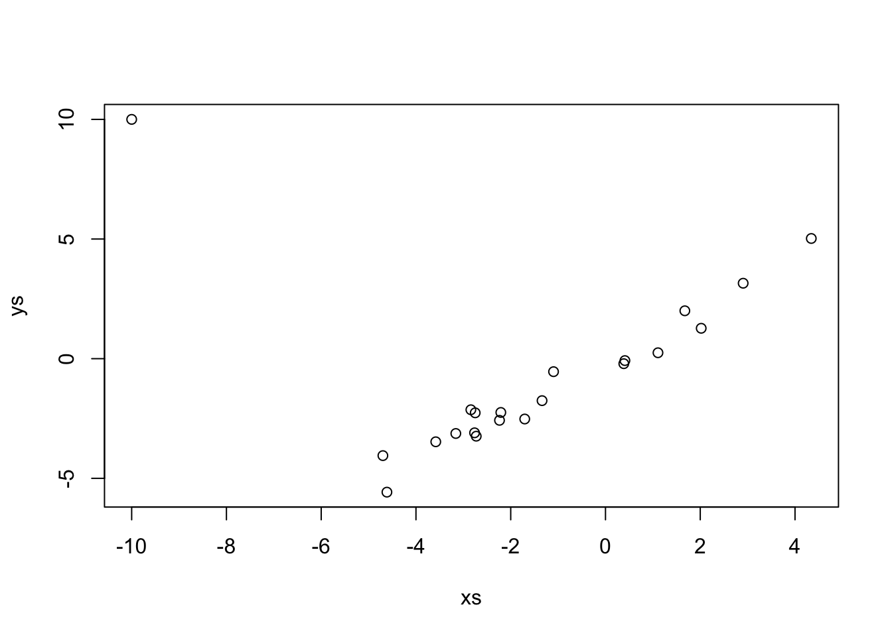
Figure 2.26: Scatterplot after adding one extreme outlier at approximately (-10, 10). The original 20 points still cluster tightly around y = x, but the single outlier in the upper-left corner pulls the visual trend toward a negative slope.
If we just use lm, which uses SSE.
##
## Call:
## lm(formula = ys ~ xs)
##
## Coefficients:
## (Intercept) xs
## -0.5012 0.1422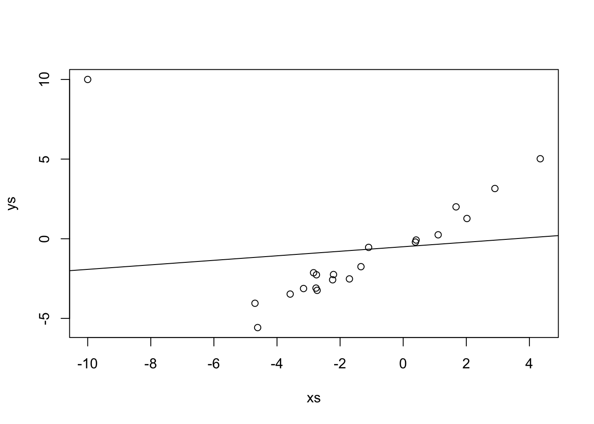
Figure 2.27: Scatterplot with SSE-minimizing regression line fit to the data including the outlier. The line has been pulled substantially toward the outlier compared to what it would look like without it, now showing a near-zero or slightly negative slope instead of the true positive slope.
Repeat the above, replacing the outlier with successively bigger outliers, and see what happens to the line of best fit. Convince yourself that when the outlier is big enough, the line of best fit is perpendicular to the original line.
##
## Call:
## lm(formula = ys ~ xs)
##
## Coefficients:
## (Intercept) xs
## -1.3940 -0.5616When you are done using MASS, I always recommend detaching it. The reason is that MASS has a function called select that masks dplyr::select if we load MASS after loading dplyr.
Vignette: A dplyr primer
The dplyr package is perhaps the most popular package in the tidyverse, and one of R’s most popular packages overall.
It provides a powerful and intuitive way of wrangling and manipulating data into the forms that we will need for analysis and visualization.
We assume that the data frame in question consists of a number of observations (rows) of various variables (columns).
Each row should correspond to a single observation, and each column should be measuring a single thing, and have a meaningful name.
In this vignette, we discuss the basics of dplyr along with some string manipulation and time manipulation.
There are many functions inside of dplyr, but if you learn the following 6, then you will be well on your way to being a data wrangling boffin.
filterUse this to create a subset of observations of data. That is, we remove some of the rows from the data frame, and keep the rest of them.selectUse this to create a subset of variables of data. That is, we remove some of the columns from the data frame, and keep the rest of them.mutateUse this to create a new variable that gets added to the data frame. The new variable can be a combination of the other variables in the data frame.summarizeUse this to reduce the data frame down to a single value. This is most often used in conjunction withgroup_bybelow, which means each group is reduced down to a single value via some computation.group_byOrganize the data frame into groups. Primarily used withsummarizebut sometimes also withmutate. The functionn()returns the number of observations (rows) in each group.%>%The pipe. Without the pipe,dplyrnever would have gained popularity. The pipe allows us to chain together operations so that the data wrangling can follow our natural language manner of doing the wrangling.
Let’s see how these work with some examples. Consider the babynames package in the babynames library.
## # A tibble: 1,924,665 × 5
## year sex name n prop
## <dbl> <chr> <chr> <int> <dbl>
## 1 1880 F Mary 7065 0.0724
## 2 1880 F Anna 2604 0.0267
## 3 1880 F Emma 2003 0.0205
## 4 1880 F Elizabeth 1939 0.0199
## 5 1880 F Minnie 1746 0.0179
## 6 1880 F Margaret 1578 0.0162
## 7 1880 F Ida 1472 0.0151
## 8 1880 F Alice 1414 0.0145
## 9 1880 F Bertha 1320 0.0135
## 10 1880 F Sarah 1288 0.0132
## # ℹ 1,924,655 more rowsThis data set lists all names in the United States given to at least 5 babies in a year. It has almost 2 million observations of 5 variables.
Example 2.2 Create a data frame that contains only those babies born in 1899.
## # A tibble: 3,042 × 5
## year sex name n prop
## <dbl> <chr> <chr> <int> <dbl>
## 1 1899 F Mary 13172 0.0532
## 2 1899 F Anna 5115 0.0207
## 3 1899 F Helen 5048 0.0204
## 4 1899 F Margaret 4249 0.0172
## 5 1899 F Ruth 3912 0.0158
## 6 1899 F Florence 3314 0.0134
## 7 1899 F Elizabeth 3287 0.0133
## 8 1899 F Marie 3156 0.0128
## 9 1899 F Ethel 2999 0.0121
## 10 1899 F Lillian 2703 0.0109
## # ℹ 3,032 more rowsCreate a data frame that contains only those babies born in 1899 that were assigned Female at birth.
## # A tibble: 1,842 × 5
## year sex name n prop
## <dbl> <chr> <chr> <int> <dbl>
## 1 1899 F Mary 13172 0.0532
## 2 1899 F Anna 5115 0.0207
## 3 1899 F Helen 5048 0.0204
## 4 1899 F Margaret 4249 0.0172
## 5 1899 F Ruth 3912 0.0158
## 6 1899 F Florence 3314 0.0134
## 7 1899 F Elizabeth 3287 0.0133
## 8 1899 F Marie 3156 0.0128
## 9 1899 F Ethel 2999 0.0121
## 10 1899 F Lillian 2703 0.0109
## # ℹ 1,832 more rowsAs you can see, if we have multiple conditions separated by a comma, filter interprets that as an and condition. If we want to use or, we need to use the vector valued or operator |.
Create a data frame that contains only those babies born either in 1900 or 2000.
## # A tibble: 33,499 × 5
## year sex name n prop
## <dbl> <chr> <chr> <int> <dbl>
## 1 1900 F Mary 16706 0.0526
## 2 1900 F Helen 6343 0.0200
## 3 1900 F Anna 6114 0.0192
## 4 1900 F Margaret 5304 0.0167
## 5 1900 F Ruth 4765 0.0150
## 6 1900 F Elizabeth 4096 0.0129
## 7 1900 F Florence 3920 0.0123
## 8 1900 F Ethel 3896 0.0123
## 9 1900 F Marie 3856 0.0121
## 10 1900 F Lillian 3414 0.0107
## # ℹ 33,489 more rowsThe select function is not as complicated or really as useful as the filter function.
Example 2.3 Create a data frame that only contains year and name.
## # A tibble: 1,924,665 × 2
## year name
## <dbl> <chr>
## 1 1880 Mary
## 2 1880 Anna
## 3 1880 Emma
## 4 1880 Elizabeth
## 5 1880 Minnie
## 6 1880 Margaret
## 7 1880 Ida
## 8 1880 Alice
## 9 1880 Bertha
## 10 1880 Sarah
## # ℹ 1,924,655 more rowsSelect can be useful if you know regular expressions and want to select from a long list of variables. Instead of putting the variable name in, you use matches("") and put a regular expression inside the quotes. For example, to select all variables that start with n.
## # A tibble: 1,924,665 × 2
## name n
## <chr> <int>
## 1 Mary 7065
## 2 Anna 2604
## 3 Emma 2003
## 4 Elizabeth 1939
## 5 Minnie 1746
## 6 Margaret 1578
## 7 Ida 1472
## 8 Alice 1414
## 9 Bertha 1320
## 10 Sarah 1288
## # ℹ 1,924,655 more rowsIf you don’t know regular expressions, that’s OK. The ^ indicates that we only want to find matches at the beginning of the variable name, and the n indicates what we want to match. In this instance, since there are no other variables with an n in them, we wouldn’t have to include the ^.
Example 2.4 Suppose we wanted to create a new variable which contains the percentage of babies with of that gender and name in a given year. To do this, we would need to multiple prop by 100 and store it in a new variable.
## # A tibble: 1,924,665 × 6
## year sex name n prop percent
## <dbl> <chr> <chr> <int> <dbl> <dbl>
## 1 1880 F Mary 7065 0.0724 7.24
## 2 1880 F Anna 2604 0.0267 2.67
## 3 1880 F Emma 2003 0.0205 2.05
## 4 1880 F Elizabeth 1939 0.0199 1.99
## 5 1880 F Minnie 1746 0.0179 1.79
## 6 1880 F Margaret 1578 0.0162 1.62
## 7 1880 F Ida 1472 0.0151 1.51
## 8 1880 F Alice 1414 0.0145 1.45
## 9 1880 F Bertha 1320 0.0135 1.35
## 10 1880 F Sarah 1288 0.0132 1.32
## # ℹ 1,924,655 more rowsA more complicated example would be to create a new variable which contains the first letter of each baby’s name.
We would need to use mutate to do that, along with some string work to pull out the first letter of the name.
We will use the stringr package to manipulate strings.
The particular function we need for this task is str_extract.
Again, we will need a regular expression which matches the first letter of the baby’s name.
Since the first letter is (perhaps?) the only one capitalized, we could probably use "[A-Z]", which matches any letter between A and Z.
But, to be safe, we anchor the match at the front of the name using ^, just like we did above with variable names.
## # A tibble: 1,924,665 × 6
## year sex name n prop first_letter
## <dbl> <chr> <chr> <int> <dbl> <chr>
## 1 1880 F Mary 7065 0.0724 M
## 2 1880 F Anna 2604 0.0267 A
## 3 1880 F Emma 2003 0.0205 E
## 4 1880 F Elizabeth 1939 0.0199 E
## 5 1880 F Minnie 1746 0.0179 M
## 6 1880 F Margaret 1578 0.0162 M
## 7 1880 F Ida 1472 0.0151 I
## 8 1880 F Alice 1414 0.0145 A
## 9 1880 F Bertha 1320 0.0135 B
## 10 1880 F Sarah 1288 0.0132 S
## # ℹ 1,924,655 more rowsNow, we get to some more interesting tasks which incolve group_by and summary.
Example 2.5 How many babies are there from 1880? We first filter so that only 1880 is shown, then we summarize by adding up all of the values of n.
## # A tibble: 1 × 1
## tot
## <int>
## 1 201484This is a bit awkward since we created the intermediate data frame bb_1880. It would have been nice to just use the result from filter directly in summarize. That’s exactly what pipes do!
bb %>%
filter(year == 1880) %>% #same as filter(bb, year == 1880)
summarize(tot = sum(n)) #same as summarize(filter(bb, year == 1880), tot = sum(n))## # A tibble: 1 × 1
## tot
## <int>
## 1 201484You read the above as follows. “Take bb, filter to year is only 1880, and then summarize by adding the values of n.” The pipes take the place of the statement “and then” when you are thinking to yourself about how to break down a problem.
Now let’s add group_by. The group_by function groups the data frame according to values of one or more variable so that you can perform computations on each group separately. So, if we wanted to find the total number of babies in each year separately, we would proceed as follows:
## # A tibble: 138 × 2
## year tot
## <dbl> <int>
## 1 1880 201484
## 2 1881 192696
## 3 1882 221533
## 4 1883 216946
## 5 1884 243462
## 6 1885 240854
## 7 1886 255317
## 8 1887 247394
## 9 1888 299473
## 10 1889 288946
## # ℹ 128 more rowsIf we wanted to do the same thing, but for Females and Males separately:
## `summarise()` has regrouped the output.
## ℹ Summaries were computed grouped by year and sex.
## ℹ Output is grouped by year.
## ℹ Use `summarise(.groups = "drop_last")` to silence this message.
## ℹ Use `summarise(.by = c(year, sex))` for per-operation grouping
## (`?dplyr::dplyr_by`) instead.## # A tibble: 276 × 3
## # Groups: year [138]
## year sex tot
## <dbl> <chr> <int>
## 1 1880 F 90993
## 2 1880 M 110491
## 3 1881 F 91953
## 4 1881 M 100743
## 5 1882 F 107847
## 6 1882 M 113686
## 7 1883 F 112319
## 8 1883 M 104627
## 9 1884 F 129020
## 10 1884 M 114442
## # ℹ 266 more rowsFinally, what if we wanted to count the number of distinct names given to babies in each year? Here, we would use n(), which is a special function that returns the number of observations in a data frame. If it is done with a grouped data frame, then it computes the number of observations in each group.
## # A tibble: 138 × 2
## year count
## <dbl> <int>
## 1 1880 2000
## 2 1881 1935
## 3 1882 2127
## 4 1883 2084
## 5 1884 2297
## 6 1885 2294
## 7 1886 2392
## 8 1887 2373
## 9 1888 2651
## 10 1889 2590
## # ℹ 128 more rowsNext steps: the above 6 functions can take you far. If you want to take your manipulation skills to the next level, the next functions I would learn would be pivot_longer, pivot_wider, left_join, slice_* (the family of slice functions), and start learning about the stringr and lubridate packages. There is a homework problem that requires you to use lubridate, so here is a quick example, where we convert seoulweather date into a lubridate object for plotting purposes.
First, note that if we just pass date to ggplot2 and plot it, it looks terrible. That’s because ggplot doesn’t know date is a date.
ss <- as_tibble(fosdata::seoulweather)
library(ggplot2)
ggplot(ss, aes(x = date, y = next_tmax)) +
geom_point()## Warning: Removed 27 rows containing missing values or values outside the scale range
## (`geom_point()`).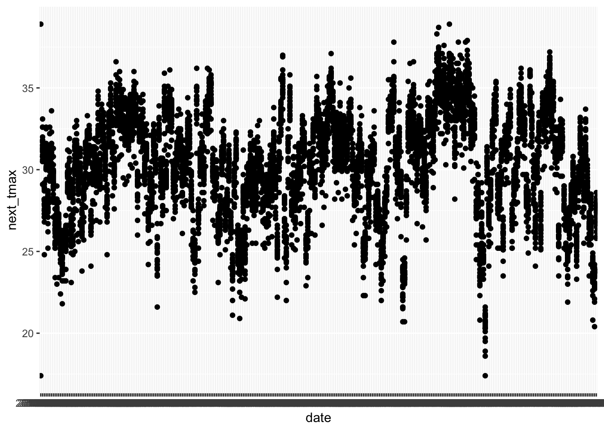
After we change date to a date variable, things look much better, even though there would still be a lot to do to make this make sense. For your homework, you will want to filter down to the mentioned stations and year, use a grouping variable (or color) and then use geom_line. This problem is hard. Don’t be discouraged if you don’t get it. Come and get help in office hours.
library(lubridate)
ss <- ss %>%
mutate(date = ymd(date))
ggplot(ss, aes(x = date, y = next_tmax)) +
geom_point()## Warning: Removed 29 rows containing missing values or values outside the scale range
## (`geom_point()`).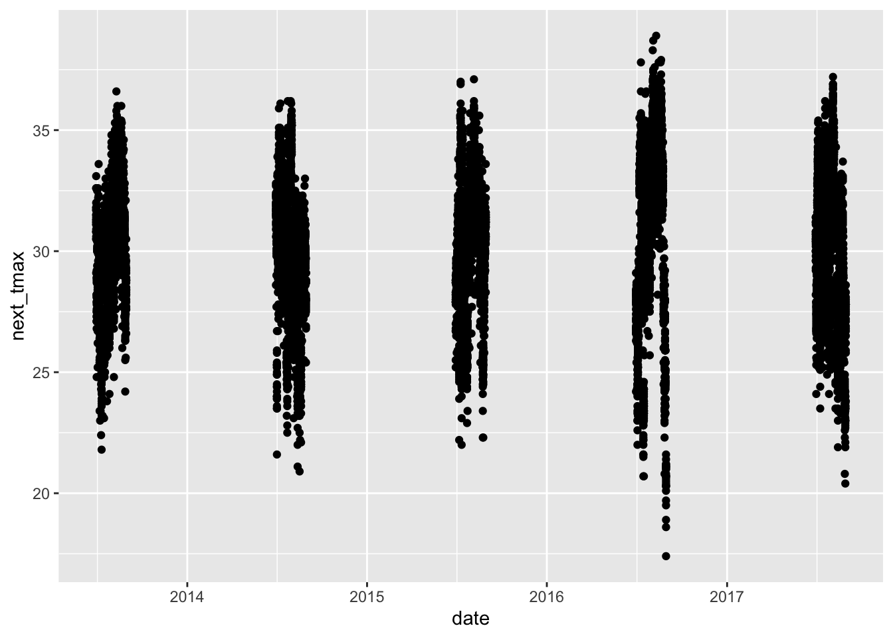
Something like this is what you are looking for in the homework, but don’t worry if yours doesn’t look exactly like this.
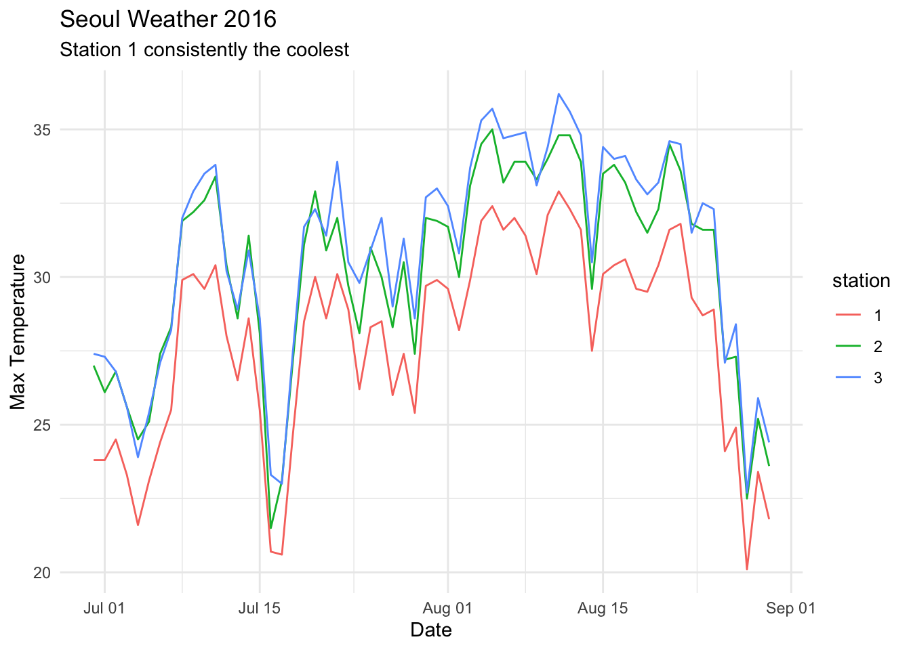
2.6 Exercises
Let \(X_1, \ldots, X_5\) be normal random variables with means \(1, 2, 3, 4, 5\) and variances \(1, 4, 9, 16, 25\).
What kind of rv is \(\overline{X}\)? Include the values of any parameters.
Use simulation to plot the pdf of \(\overline{X}\) and confirm your answer to part 1.
Consider the data set
ISwR::bp.obese. If you have never installed theISwRpackage, you will need to runinstall.packages("ISwR")before accessing this data set.Find the line of best fit for modeling blood pressure versus obesity by minimizing the SSE.
Does it appear that the model \(y = \beta_0 + \beta_1 x + epsilon\), where \(y\) is bp, \(x\) is obese, and \(\epsilon\) is normal with mean 0 and standard deviation \(\sigma\) is correct for this data?
Suppose you wish to model data \((x_1, y_1), \ldots, (x_n, y_n)\) by \[ y_i = \beta_0 + x_i + \epsilon_i \] \(\epsilon_i\) are iid normal with mean 0 and standard deviation \(\sigma\).
Find the \(\beta_0\) that minimizes the SSE, \(\sum(y_i - (\beta_0 + x_i))^2\) in terms of \(x_i\) and \(y_i\). Call this estimator \(\hat \beta_0\).
What kind of random variable is \(\hat \beta_0\)? Be sure to include both its mean and standard deviation or variance (in terms of the \(x_i\)).
Verify your answer via simulation when the true relationship is \(y = 2 + x + \epsilon\), where \(\epsilon\) is normal with mean 0 and standard deviation 1.
Consider the data set
HistData::Galtonthat we looked at briefly. Assume the model \(y_i = \beta_0 + \beta_1 x_i + \epsilon_i\), and do a hypothesis test of \(H_0: \beta_1 = 1\) versus \(H_a: \beta_1 \not= 1\). Explain what this means in the context of the data.Consider your model \(y_i = \beta_0 + x_i + \epsilon_i\), where \(\epsilon_i\) are independent normal random variables with mean 0 and standard deviation \(\sigma\). You showed above that \(\hat \beta_0 = \overline{y} - \overline{x}\) is normal with mean \(\beta_0\) and standard deviation \(\sigma/\sqrt{n}\).
Fix a value of \(\beta_0\) and \(\sigma\). The residuals are \(y_i - \hat \beta_0 - x_i\). Find an unbiased estimator for \(\sigma^2\) in terms of the residuals. Call this estimator \(S^2\).
What kind of random variable is \(\frac{\hat \beta_0 - \beta_0}{\sigma/\sqrt{n}}\)?
What kind of random variable is \(\frac{\hat \beta_0 - \beta_0}{S/\sqrt{n}}\)?
Download the data
problem_2_5.csvhere. Model \(ys \sim \beta_0 + xs + \epsilon\) and perform a hypothesis test of \(H_0: \beta_0 = 2\) versus \(H_a: \beta_0 \not= 2\) at the \(\alpha = .05\) level.
Consider the data set
carData::Davis. This data set gives the recorded weight and the self-reported weight for about 200 patients. We are interested in modelingweightas a function ofrepwt.Confirm that there is an outlier in this data set. Do not fix the outlier.
Find the line of best fit using SSE, using the Huber or psuedo-Huber loss function, and using the Tukey bisquare loss function. Comment.